亚洲大尺度大地形夏季两类加热及其位涡强迫的激发 I. 青藏高原
Two types of summertime heating over the Asian large-scale orography and excitation of potential-vorticity forcing I. Over Tibetan Plateau
亚洲大尺度大地形夏季两类加热及其位涡强迫的激发 I. 青藏高原
Two types of summertime heating over the Asian large-scale orography and excitation of potential-vorticity forcing I. Over Tibetan Plateau
吴国雄1，卓海峰1,2，王子谦3,1* & 刘屹岷1†
WU GuoXiong1, ZHUO HaiFeng1,2, WANG ZiQian3,1* & LIU YiMin1†
1 中国科学院大气物理研究所大气科学和地球流体力学数值模拟国家重点实验室，北京 100029；
1 State Key Laboratory of Numerical Modeling for Atmospheric Sciences and Geophysical Fluid Dynamics, Institute of Atmospheric Physics, Chinese Academy of Sciences, Beijing 100029, China;
2 中国科学院大学地球科学学院，北京 100049；
2 College of Earth Sciences, University of Chinese Academy of Sciences, Beijing 100049, China;
3 中山大学大气科学学院，广州 510275
3 School of Atmospheric Sciences, Sun Yat-sen University, Guangzhou 510275, China
收稿日期：2016 年 1 月 4 日；接受日期：2016 年 4 月 12 日
Received January 4, 2016; accepted April 12, 2016
摘要 基于数值模拟，本研究探讨了夏季青藏高原主体（即海拔高于 2 km 的地形区域）地表感热加热与大气潜热加热的特征及相互作用。
Abstract Based on numerical simulation, this study explored the characteristics and interactions of surface sensible heating and atmospheric latent heating over the main part of the Tibetan Plateau, i.e., terrain at elevations >2 km in summer.
比较了这两类加热对局地垂直运动和季风经圈环流的影响。
The impacts of these two types of heating on local vertical motion and monsoonal meridional circulation were compared.
理论分析与数值试验表明，通过改变对流层上层气温与环流的配置，这两类加热能够在对流层顶附近生成绝对涡度极小值和异常的位涡强迫，增强亚洲夏季风经圈环流，并在中纬度西风带内激发出向东传播的罗斯贝波列。
Theoretical analysis and numerical experimentation demonstrated that by changing the configuration of the upper-tropospheric air temperature and circulation, the two types of heating could generate both minimum absolute vorticity and abnormal potential vorticity forcing near the tropopause, enhance the meridional circulation of the Asian summer monsoon, and produce an eastward-propagating Rossby wave train within the mid-latitude westerly flow.
进而，这些特征的表现被证明能够影响北半球的环流。
Consequently, the manifestations of these features were shown to influence the circulation of the Northern Hemisphere.
关键词 青藏高原，地表感热加热，潜热加热，季风经圈环流，位涡强迫
Keywords Tibetan Plateau, Surface sensible heating, Latent heating, Monsoonal meridional circulation, Potential vorticity forcing
引用格式：Wu G X, Zhuo H F, Wang Z Q, Liu Y M. 2016. Two types of summertime heating over the Asian large-scale orography and excitation of potential-vorticity forcing I. Over Tibetan Plateau. Science China Earth Sciences, doi: 10.1007/s11430-016-5328-2
Citation: Wu G X, Zhuo H F, Wang Z Q, Liu Y M. 2016. Two types of summertime heating over the Asian large-scale orography and excitation of potential-vorticity forcing I. Over Tibetan Plateau. Science China Earth Sciences, doi: 10.1007/s11430-016-5328-2
1. 引言
1. Introduction
青藏高原（TP）约占我国领土面积的 25%，平均海拔超过 4 km。
The Tibetan Plateau (TP) covers about 25% of the territory of China, with an average elevation of terrain of >4 km.
高原周边地形，尤其是其南坡，高度迅速抬升。
The height of the topography around the TP, especially on its southern slope, increases rapidly.
高原西部与东部在地表特征、植被和气象特征方面存在显著差异（Ye and Gao, 1979）。
There is significant contrast between the western and eastern TP with regard to land surface features, vegetation, and meteorological characteristics (Ye and Gao, 1979).
高原上空空气质量仅为海平面陆地上空空气质量的约 60%。
The mass of air above the TP is only about 60% of that above land at sea level.
此外，高原上的辐射过程与低海拔周边地区差异很大，尤其是在大气边界层内（Smith and Shi, 1992; Liu et al., 2006）。
Moreover, radiative processes over the TP are very different from the surrounding regions at lower elevations, especially within the atmospheric boundary layer (Smith and Shi, 1992; Liu et al., 2006).
因此，高原上的热力过程具有独特的特征，高原通过其独特的热力和动力作用，对局地及周边地区（乃至整个地球）的环流系统、天气和气候产生显著影响（Yanai and Wu, 2006; Xu et al., 2008a, 2008b, 2010）。
Thus, the thermal processes over the TP possess distinct features, and the TP exerts significant influence on the circulation systems, weather, and climate of the local and surrounding regions (and even the entire globe) through its distinct thermodynamic and mechanical effects (Yanai and Wu, 2006; Xu et al., 2008a, 2008b, 2010).
以往研究通过分析夏季感热加热（SH）或反算总热源 Q1，揭示了高原加热的分布特征（Luo and Yanai, 1984; Yanai et al., 1992; Yanai and Wu, 2006）。
Previous studies have revealed the distribution features of heating over the TP by analyzing the sensible heating (SH) in summer or by back-computing the total heat source Q1 (Luo and Yanai, 1984; Yanai et al., 1992; Yanai and Wu, 2006).
根据高原“感热气泵”（TP-SHAP）理论（Wu et al., 1997, 2007），高原地表感热加热能够驱动周边地区低层水汽向高原迅速辐合，在高原南部和南亚北部产生大量凝结和降水。
According to the theory of the TP “SH-driven air pump” (TP-SHAP) (Wu et al., 1997, 2007), SH on the surface of the TP can drive low-level water vapor in surrounding regions to converge rapidly on the TP, resulting in considerable condensation and precipitation over the southern TP and northern parts of South Asia.
然而，高原南坡降水的空间分布并不均匀。
However, the spatial distribution of precipitation over the southern slope of the TP is not uniform.
此外，来自南半球沿索马里急流的水汽输送带在高原南坡上空的爬升也是不均匀的。
Moreover, the water vapor conveyor belt along the Somali jet from the Southern Hemisphere also does not ascend uniformly over the southern slope of the TP.
输送带的一支在孟加拉湾中部向北偏转。
One branch of the conveyor belt deviates northward over the central Bay of Bengal.
该支随后在高原南坡爬升，于夏季在那里形成强降水中心。
It then ascends over the southern slope of the TP, forming a center of heavy rainfall there in the summer.
相反，高原西部降水较少。
Conversely, less precipitation appears over the western TP.
因此，夏季高原加热应包含两种不同类型：地表感热加热和受感热影响的凝结潜热加热（LH）。
Therefore, summer heating over the TP should include two different types: surface SH and condensational latent heating (LH) that is affected by the SH.
然而，高原降水又能调节地表热平衡和感热加热。
However, precipitation over the TP can regulate both the surface thermal balance and the SH.
因此，为了更好地理解高原对天气和气候的影响，揭示这两类不同加热的特征与相互作用是必要且重要的。
Therefore, to understand better the effects of the TP on the weather and climate, it is necessary and important to reveal the characteristics and interactions of these two different types of heating.
许多研究表明，高原热力强迫不仅影响南亚季风降水的变化（Wang, 2006），还影响东亚季风降水（Chang, 2004），甚至影响全球环流。
Many studies have shown that thermal forcing over the TP influences not only the variability of the precipitation of the South Asian monsoon (Wang, 2006), but also the precipitation of the East Asian monsoon (Chang, 2004), and even the global circulation.
然而，相关动力机制的细节仍不清楚。
However, the details of the associated dynamic mechanisms remain unclear.
本研究利用天气研究与预报（WRF）模式，研究了夏季高原主体，即海拔高于 2 km（h>2 km）地形区域的地表感热加热与潜热加热的特征及相互作用。
In this study, the characteristics and interactions of the summertime surface SH and LH over the main part of the TP (main TP), i.e., terrain with elevation >2 km (h>2 km), was investigated using the Weather Research and Forecasting (WRF) model.
比较了这两类非绝热加热对局地垂直运动和季风经圈环流的影响。
The impacts of these two types of diabatic heating on local vertical motion and monsoonal meridional circulation were compared.
为进一步理解高原这两类加热影响天气和气候的机制，还探讨了它们对对流层上层温度和环流配置（以及由此形成的最强反气旋）的影响，以及对流层顶附近位涡强迫生成的影响。
To further the understanding of the mechanisms via which these two types of heating over the TP affect the weather and climate, their influences on the configuration of the temperature and the circulation in the upper troposphere (and the consequent formation of the strongest anticyclone there), and on the generation of potential vorticity forcing near the tropopause were also explored.
2. 模式与试验设计
2. Model and experiment design
本研究采用 WRF 模式 3.4.1 版本（Skamarock et al., 2008）。
The WRF model version 3.4.1 (Skamarock et al., 2008) was used in this study.
该模式此前已被用作区域气候模式，模拟亚洲夏季风的变化（如 Kim and Hong, 2010; Yang et al., 2012; Wang et al., 2014a）。
This model has been employed previously as a regional climate model to simulate variations of the Asian summer monsoon (e.g., Kim and Hong, 2010; Yang et al., 2012; Wang et al., 2014a).
与大气环流模式相比，WRF 模式具有更高的分辨率，能够更准确地刻画地形，并纳入更为合理的陆面过程。
Compared with the atmospheric general circulation model, the WRF has greater resolution that can represent topography more accurately and incorporate land surface processes that are more reasonable.
因此，可以认为它是研究高原对天气和气候影响的有用工具。
Therefore, it can be considered a useful tool in research into the effects of the TP on weather and climate.
本研究 WRF 模式所采用的物理方案包括 WRF 单矩 6 类微物理方案（Hong and Lim, 2006）、Grell-Devenyi 积云对流方案（Grell and Devenyi, 2002）、Noah 陆面模式（Chen and Dudhia, 2001）、BouLac 行星边界层方案（Bougeault and Lacarrere, 1989）、Goddard 短波辐射方案（Chou and Suarez, 1999）以及长波辐射快速辐射传输模式（Mlawer et al., 1997）。
The physical packages incorporated in the WRF model for this study included the WRF Single-Moment 6-Class microphysics scheme (Hong and Lim, 2006), Grell-Devenyi convective scheme (Grell and Devenyi, 2002), Noah land-surface model (Chen and Dudhia, 2001), BouLac planetary boundary layer scheme (Bougeault and Lacarrere, 1989), Goddard shortwave scheme (Chou and Suarez, 1999), and Rapid Radiative Transfer Model for longwave radiation (Mlawer et al., 1997).
模拟区域覆盖亚洲大部分地区及邻近海洋，纬向 133 个格点、经向 195 个格点（缓冲区含 5 个格点）。
The simulation domain covered most parts of Asia and the adjacent oceans with 133 grid points latitudinally and 195 grid points longitudinally (a buffer zone had five grid points).
模式采用兰伯特投影，区域中心位于 30°N、95°E（图 1a）。
A Lambert projection was adopted and the domain was centered at 30°N, 95°E (Figure 1a).
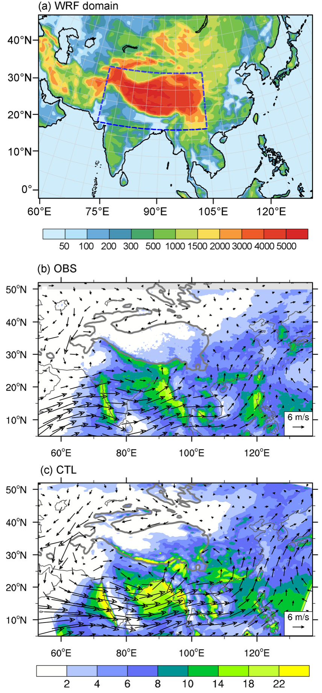
图 1 （a）敏感性试验所用 WRF 模式选取的区域（蓝色虚线）及地形高度（m），（b）TRMM 反演的降水（阴影，mm d−1）与 NCEP-FNL 再分析的 850 hPa 风场（矢量，m s−1），（c）同（b），但取自 CTL 试验。（b）和（c）中的深灰色曲线表示地形的 2 km 等高线。
Figure 1 (a) Selected domain of the WRF model used for the sensitivity experiments (blue dashed line) and the elevation of orography (m), (b) precipitation retrieved from TRMM (shading, mm d−1) and the wind at 850 hPa (vector, m s−1) from NCEP-FNL reanalysis, and (c) the same as (b) except from the CTL experiment. The heavy gray curve in (b) and (c) denotes the 2-km contour of topography.
模式水平分辨率为 45 km，垂直方向 35 层，采用地形跟随 σ 坐标，模式顶设定在 50 hPa。
The model has 45-km horizontal resolution and 35 vertical layers with a terrain-following sigma coordinate and a prescribed model top at 50 hPa.
大气初始场和侧边界条件（每 6 h 更新一次）取自美国国家环境预报中心的最终分析场（http://rda.ucar.edu/datasets/ds083.2/），海表温度（SST）强迫资料为美国国家海洋和大气管理局的最优插值海温（Reynolds et al., 2007），每日更新。
The initial state of the atmosphere and the lateral boundary conditions (updated every 6 h) were obtained from the Final Analysis of National Centers for Environmental Prediction (http://rda.ucar.edu/datasets/ds083.2/), and the sea surface temperature (SST) forcing dataset was the Optimum Interpolation SST (Reynolds et al., 2007) from the National Oceanic and Atmospheric Administration, which was updated daily.
共进行了 4 组集合试验，每组试验包含 6 个夏季（2003–2008 年），初始条件设定为 5 月 1 日 0000 UTC。
Four ensemble experiments were performed and each incorporated six summers (2003–2008) with the initial conditions set at 0000 UTC May 1.
积分时间为 4 个月，即每个试验在 8 月 31 日 1800 UTC 结束，分析所用输出资料为最后 3 个月（6–8 月，JJA）。
The integration time was 4 months, i.e., every experiment ended at 1800 UTC August 31, and the output data derived from the final 3 months (June-August, JJA) were analyzed.
表 1 给出了试验设计的详细说明。
Table 1 shows the details of the experiment design.
表 1 试验描述详情
Table 1 Details of experiment description
试验名称 ／ 试验描述
Experiment title / Experiment description
CTL：背景场，气候平均
CTL: Background, climate mean
TP_NL：移除高原主体（h≥2 km）的潜热加热
TP_NL: No latent heating over the main part of the TP (h≥2 km)
TP_NS：移除高原主体（h≥2 km）的地表感热加热
TP_NS: No surface sensible heating over the main part of the TP (h≥2 km)
STP_NS：移除高原南坡的地表感热加热
STP_NS: No surface sensible heating over the southern slope of the TP
使用 WRF 模式的正常试验命名为对照试验（CTL）。
The normal experiment with the WRF model was named the control run (CTL).
CTL 的结果用于与其他敏感性试验的结果进行对比。
Results obtained from the CTL were used for comparison with those obtained from the other sensitivity experiments.
与 TRMM 卫星观测的降水和美国国家环境预报中心再分析得到的 850 hPa 风场相比，CTL 试验合理地再现了降水场和 850 hPa 风矢量场（图 1b 和 1c）。
The CTL run reproduced the fields of both precipitation and wind vector at 850 hPa reasonably well compared with the TRMM satellite-observed precipitation and the 850-hPa wind derived from the National Centers for Environmental Prediction reanalysis (Figure 1b and 1c).
阿拉伯海、孟加拉湾、南海、高原南部和东亚的夏季风环流与降水分布均模拟得很好，表明 CTL 试验可以作为夏季风的背景试验。
The distributions of the summer monsoon circulation and precipitation over the Arabian Sea, Bay of Bengal, South China Sea, southern TP, and East Asia were all simulated well, indicating that the CTL run could serve as the background experiment of the summer monsoon.
图 2a 和 2b 给出了 CTL 中高原及其周边地区 JJA 平均地表感热加热和凝结潜热加热的空间分布。
Figure 2a and 2b show the spatial distributions of the JJA average surface SH and condensational LH over the TP and its surrounding areas in the CTL.
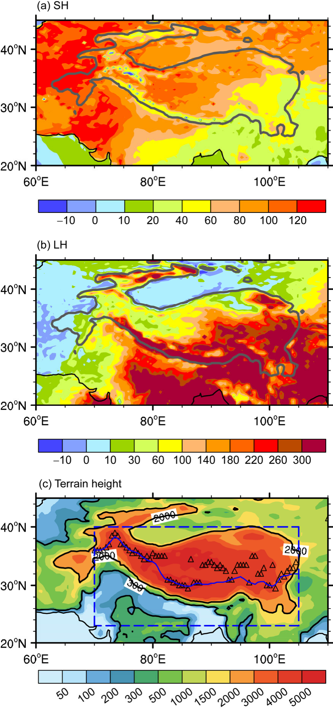
图 2 CTL 试验中模拟的地表感热加热（W m−2）（a）和潜热加热（W m−2）（b）。（c）STP_NS 试验的设计及地形高度（m）。黑色三角表示同一纬度上最高地形的位置，蓝色实线表示 STP_NS 试验中高原南坡的北界。
Figure 2 Simulated surface sensible heating (W m−2) (a) and latent heating (W m−2) (b) in the CTL experiment. (c) Experiment design for the STP_NS run and elevation (m). The black triangle denotes the location of the highest elevation along the same latitude, and the blue solid contour indicates the northern boundary of the southern slope of the TP in the STP_NS experiment.
与图 1c 所示的降水一致，潜热加热中心位于高原南坡和东南部地区，最大值超过 300 W m−2，向西北方向递减至 30 W m−2 以下。
In agreement with the precipitation shown in Figure 1c, the LH center is located over the southern slope and southeastern areas of the TP with a maximum value of >300 W m−2, which decreases northwestward to <30 W m−2.
相反，感热加热在高原东南部最弱（<40 W m−2），而在高原西北部最强（>100 W m−2）。
In contrast, SH is weakest (<40 W m−2) over the southeastern TP but strongest (>100 W m−2) over the northwestern TP.
这表明在高原上，感热加热总体弱于潜热加热，且感热加热的分布受潜热加热影响。
This indicates that over the TP, SH is generally weaker than LH and the SH distribution is influenced by LH.
以往研究通常关注整个高原的天气和气候效应。
Previous studies have usually focused on the weather and climatic effects of the entire TP.
本研究的目的在于揭示高原主体地表感热加热和对流潜热加热的不同特征与作用。
The purpose of this study was to reveal the different features and effects of surface SH and convective LH over the main TP.
因此，敏感性试验区域定义为高原主体上地形高于 2 km 的模式格点（23°–40°N，70°–105°E）。
Thus, the region for performing the sensitivity experiments was defined as those model grids where terrain is >2 km over the main TP (23°–40°N, 70°–105°E).
与 CTL 不同，设计了一个敏感性试验（TP_NL）以说明凝结潜热加热对亚洲季风的影响，在该试验中移除了高原主体整层大气柱的潜热加热。
Different from the CTL, one sensitivity experiment (TP_NL) was designed to illustrate the effects of condensational LH on the Asian monsoon, in which the LH of the entire vertical atmospheric column over the main TP was removed.
在另一个敏感性试验（TP_NS）中，不允许试验区域内释放的地表感热加热加热大气。
In another sensitivity experiment (TP_NS), the surface SH released over the experimental area was not allowed to heat the atmosphere.
此外，为研究高原南坡感热与降水之间的反馈过程，增加了第三个敏感性试验（STP_NS）。
Additionally, to investigate the feedback process between SH and precipitation over the southern slope of the TP, a third sensitivity experiment (STP_NS) was added.
STP_NS 与 TP_NS 试验类似，但仅不允许高原南坡的地表感热加热加热大气。
STP_NS was similar to the TP_NS experiment, but only the surface SH over the southern slope of the TP was not allowed to heat the atmosphere.
高原南坡定义为 23°N 以北、70°–105°E 之间、地形高于 300 m 且低于同一经度格点上最高地形的格点。
The southern slope of the TP was defined as those grid points north of 23°N and between 70° and 105°E, where topography is higher than 300 m and lower than the maximum elevation at the same longitude of the grid point.
若最高地形位于喜马拉雅山以北的高原中部，则选取其南侧次高地形。
If the maximum elevation was located within the central TP to the north of the Himalayas, then the next maximum elevation to its south was chosen.
由此得到的南坡北界如图 1c 所示，即蓝色廓线所示。
The resultant northern border of this southern slope is shown in Figure 1c, indicated by the blue contour.
3. 高原主体的两类非绝热加热及其相互作用
3. Two types of diabatic heating over the main TP and their interaction
3.1 地表感热加热（SH）的作用
3.1 Effects of surface sensible heating (SH)
图 3a 给出了 TP_NS 试验中 σ = 0.98 层的降水和近地面风场。
Figure 3a presents the precipitation and near-surface wind at σ =0.98 in the TP_NS experiment.
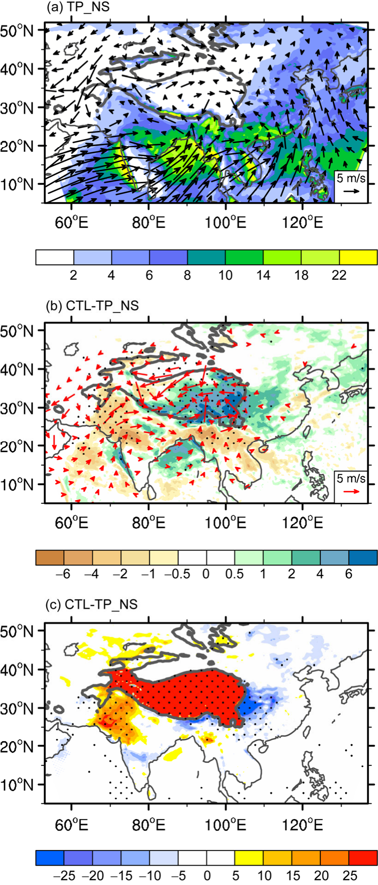
图 3 （a）TP_NS 试验和（b）CTL 与 TP_NS 之差的平均夏季降水（阴影，单位：mm day−1）及 σ = 0.98 层地面气流（矢量，m s−1）。（c）同（b），但为地表感热加热（单位：W m−2）。（b）和（c）中点状区域表示超过 95% 置信水平的统计显著性。（b）中仅绘制超过 95% 置信水平的显著风场差值。
Figure 3 Mean summer precipitation (shading, unit: mm day−1) and surface flow at the σ =0.98 level (vectors, m s−1) for (a) the TP_NS experiment and (b) the difference between CTL and TP_NS. (c) The same as (b) but for the surface sensible heating (unit: W m−2). Dotted regions in (b) and (c) denote statistical significance above the 95% level. Only the wind differences with statistical significance above the 95% level are plotted in (b).
没有地表感热加热时，高原地面出现反气旋性环流，在高原东南边界附近的南侧形成辐散和气流下沉。
Without surface SH, an anticyclonic circulation appears on the TP surface, forming divergence and descent of air to its south near the southeastern boundary of the plateau.
这与 CTL 试验中同一地区 850 hPa 气流的辐合和上升形成鲜明对比（图 1c）。
This is in distinct contrast with the convergence and ascent of air at 850 hPa in the same region in the CTL run (Figure 1c).
该试验中高原区域以外的降水和环流分布与 CTL 试验差别不大。
The distributions of precipitation and circulation beyond the plateau region in this experiment differ little from those in the CTL run.
值得注意的是，在 TP_NS 试验中，仅在海拔 h>2 km 的高原主体区域移除了地表感热加热。
It is worth noting that in the TP_NS experiment, surface SH is removed only in the main TP area where elevation h>2 km.
在覆盖整个高原（包括 h<2 km 区域）移除地表感热加热的试验中，中南半岛和东亚的降水显著减少（Wu et al., 2012）。
In an experiment in which the surface SH was removed across the entire TP area, including the area with elevation h<2 km, the precipitation over the Indochina Peninsula and East Asia decreases substantially (Wu et al., 2012).
由此可以推断，高原对亚洲夏季风降水的影响主要归因于其 h<2 km 低坡上的地表感热加热。
We can thus infer that the impact of the TP on the precipitation of the Asian summer monsoon is mainly attributable to surface SH over its lower slopes where h<2 km.
这是因为，根据位涡理论，低坡上的地表感热加热能够产生近地面气旋性环流，将大量水汽从海洋输送到陆地区域，形成大陆季风降水（He et al., 2015）。
This is because, following potential vorticity theory, surface SH over its lower slopes can generate near-surface cyclonic circulation that can transport substantial quantities of water vapor from the sea to the land area, forming continental monsoonal precipitation (He et al., 2015).
虽然高原主体（h>2 km）的地表感热加热也能产生气旋性环流（图 3b），但它在当地产生的水汽输送要少得多，对周边地区季风降水的贡献也变得弱得多。
Although surface SH over the main TP (h>2 km) can also produce cyclonic circulation (Figure 3b), it generates much less water vapor transport there and its contribution to monsoonal precipitation in the surrounding area becomes much weaker.
在某种程度上，CTL 与 TP_NS 试验之差代表了高原主体地表感热加热的作用。
To a certain extent, the difference between the CTL and TP_NS runs represents the effect of surface SH over the main TP.
这种作用形成了一个以高原为中心、显著的近地面气旋性辐合环流，气流从高原较低处（包括其周边地区）向较高处辐合（图 3b）。
Such an effect forms a prominent surface cyclonic convergent circulation, which is centered over the TP, with air converging from the lower surface of the TP (including its surrounding area) toward its higher elevation (Figure 3b).
高原主体的地表感热加热还使高原中部、东部和南部的降水增加，其中高原东南部降水增幅最大，超过 6 mm d−1。
The surface SH on the main TP also leads to increased precipitation over the central, eastern, and southern plateau with a maximum of more than 6 mm d−1 over the southeastern TP.
东亚和孟加拉湾的降水也增加，但南亚热带大陆的降水减少。
Precipitation also increases over East Asia and the Bay of Bengal but it decreases over the tropical continent in South Asia.
由于降水的差异，高原以外地区的地表感热加热也随之变化（图 3c）：在降水减少的印度西北部增加，而在降水增加的高原南边界及其以东地区减小。
Because of the difference in precipitation, surface SH beyond the TP area also changes (Figure 3c); it increases over northwestern India where precipitation is decreased and it decreases over the southern border of the TP and to its east where precipitation is increased.
3.2 对流潜热加热（LH）的作用
3.2 Effects of convective latent heating (LH)
在移除高原主体潜热加热的 TP_NL 试验中，高原以外地区的降水和地面环流分布（图 4a）与 CTL 试验 850 hPa 的降水和风场分布（图 1c）相比变化不大。
In the TP_NL experiment, in which the LH over the main TP was removed, the distributions of precipitation and surface circulation in the area beyond the TP (Figure 4a) change little in comparison with the distribution of precipitation and wind at 850 hPa in the CTL run (Figure 1c).
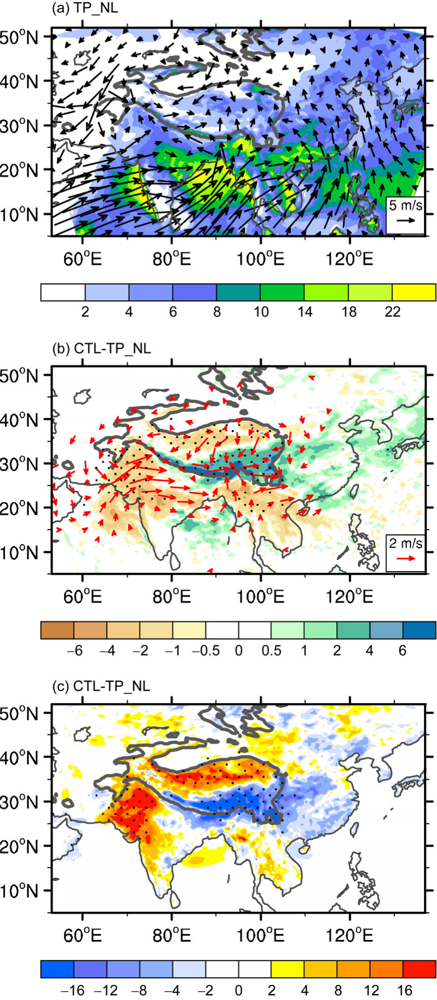
图 4 （a）TP_NL 试验和（b）CTL 与 TP_NL 之差的平均夏季降水（阴影，单位：mm day−1）及 σ = 0.98 层地面气流（矢量，m s−1）。（c）同（b），但为地表感热加热（单位：W m−2）。（b）和（c）中点状区域表示超过 95% 置信水平的统计显著性。（b）中仅绘制超过 95% 置信水平的显著风场差值。
Figure 4 Mean summer precipitation (shading, unit: mm day−1) and surface flow at the σ =0.98 level (vectors, m s−1) for (a) the TP_NL experiment and (b) the difference between CTL and TP_NL. (c) The same as (b) but for the surface sensible heating (unit: W m−2). Dotted regions in (b) and (c) denote statistical significance above the 95% level. Only the wind differences with statistical significance above the 95% level are plotted in (b).
其结果与移除地表感热加热的试验（即 TP_NS）所得结果相似，如图 3a 所示。
The results are similar to those achieved in the experiment without surface SH (i.e., TP_NS), as shown in Figure 3a.
不同之处在于 TP_NL 试验中存在地表感热加热。
What is different is the existence of surface SH in the TP_NL run.
因此，高原上发展出地面气旋性环流，伴随地面辐合和超过 4–6 mm d−1 的强降水。
Consequently, surface cyclonic circulation develops over the TP accompanied by surface convergence and strong precipitation of >4–6 mm d−1.
在某种程度上，CTL 与 TP_NL 试验之差代表了高原主体对流潜热加热的作用。
To a certain extent, the difference between the CTL and TP_NL runs represents the effect of convective LH over the main TP.
在高原以外地区，这种作用同样使孟加拉湾和东亚的降水增加，使南亚大陆的降水减少（图 4b），与感热试验所得结果相似（图 3b）。
Beyond the TP area, such an effect also increases precipitation over the Bay of Bengal and East Asia and it decreases precipitation over continental in South Asia (Figure 4b), similar to the results obtained in the SH case (Figure 3b).
这些结果也与资料分析（Zhao and Chen, 2001; Zhou et al., 2009）和其他敏感性试验（Wang et al., 2014b; Wu et al., 2015a）得到的结论相近。
These results are also close to the findings obtained from data analysis (Zhao and Chen, 2001; Zhou et al., 2009) and from other sensitivity experiments (Wang et al., 2014b; Wu et al., 2015a).
观测与试验结果一致，是因为大气对高原非绝热加热的响应受位涡约束和大气热力适应所支配（Wu and Liu, 2000; Wu et al., 20015a）。
The agreement between the results from observations and experiments is because the atmospheric response to diabatic heating over the TP is subject to the potential vorticity constraint and to atmospheric thermal adaptation (Wu and Liu, 2000; Wu et al., 20015a).
在高原区域内，这种作用使北部降水增加、南部降水减少，与位于高原南部的地面风场东西向辐合带吻合良好。
Within the TP area, such an effect increases precipitation in the north and reduces it in the south, in good agreement with the west-east-oriented convergent zone in the surface wind field that is located over the southern TP.
降水分布的差异对地表感热加热的分布有强烈影响（图 4c）：感热在降水增加的高原南部减小，在降水减少的北部增大。
The difference in the distribution of precipitation has a strong impact on the distribution of surface SH (Figure 4c); it decreases in the southern TP where precipitation is increased and it increases in the north where rainfall is reduced.
上述降水与感热之间的关联并非单向的因果关系。
The aforementioned association between precipitation and SH is not a single-direction cause-effect relation.
为理解二者复杂的相互作用与反馈，设计了另一个数值试验（STP_NS），移除高原南坡的地表感热加热，如图 2c 所示。
To understand their complex interaction and feedback, another numerical experiment (STP_NS) was designed in which the surface SH over the southern slope of the TP was removed, as shown in Figure 2c.
其结果的差异可视为高原南坡地表感热加热作用的体现，可用于与高原非绝热加热引起的结果进行对比。
The differences in the results can be considered the consequence of the effect of surface SH on the southern slope of the TP, and they can be used for comparison with the results induced by diabatic heating over the TP.
850 hPa 降水和风场的差异如图 5 所示。
The differences in precipitation and wind field at 850 hPa are presented in Figure 5.
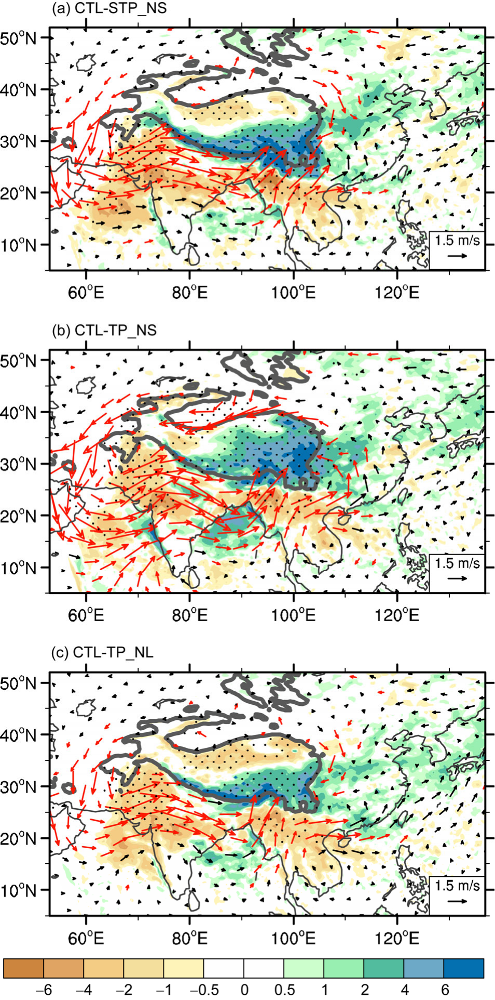
图 5 CTL 与 STP_NS（a）、CTL 与 TP_NS（b）以及 CTL 与 TP_NL 试验（c）之间平均夏季降水（阴影，单位：mm day−1）和 850 hPa 风场（矢量，单位：m s−1）的差异。点状区域表示降水距平超过 95% 置信水平的统计显著性。超过 95% 置信水平的显著风场差值以红色绘制。
Figure 5 Differences in mean summer precipitation (shading, unit: mm day−1) and 850-hPa wind (vectors, unit: m s−1) between CTL and STP_NS (a), CTL and TP_NS (b), and CTL and TP_NL runs (c). Dotted regions denote the statistical significance of precipitation anomalies is above the 95% level. Wind differences significant above the 95% level are plotted in red.
高原南坡地表感热加热引起的作用（图 5a）与高原主体潜热加热引起的作用（图 5c）相似。
The effects induced by surface SH on the southern slope of the TP (Figure 5a) are similar to those induced by LH over the main TP (Figure 5c).
例如，二者均在高原周围 850 hPa 形成气旋性环流，使东亚和孟加拉湾降水增加，使热带大陆降水减少，并使高原南部降水增加、北部降水减少。
For example, they both form cyclonic circulation at 850 hPa surrounding the TP, increase precipitation over East Asia and the Bay of Bengal, decrease precipitation over the tropical continent, and cause increasing rainfall over the southern TP and decreasing rainfall over its north.
尽管有这些相似之处，图 5a 所示的降水差异是高原南坡地表感热加热作用的结果，而图 5c 所示的降水差异则导致高原南部地表感热减弱、北部地表感热增强（图 4c）。
Despite these similarities, the difference in precipitation presented in Figure 5a is a consequence of the surface SH over the southern slope of the TP, whereas the precipitation difference presented in Figure 5c leads to the decreased surface SH in the south and increased surface SH in the north of the TP (Figure 4c).
这表明高原南坡的地表感热加热能够导致高原南部降水增加。
This indicates that surface SH over the southern slope of the TP can result in increased precipitation over the southern TP.
反之，高原南部降水的增加会削弱南坡的地表感热加热，导致局地降水减少。
Conversely, increased precipitation over the southern TP can weaken surface SH over the southern slope, leading to reduced local precipitation.
由此可以推断，高原上降水（潜热）与地表感热加热相互作用强烈，二者无论在真实大气中还是在数值模式中观测到的分布，均代表这种复杂相互作用与反馈机制的准平衡态。
We can thus infer that precipitation (LH) and surface SH over the TP interact strongly and that their distributions, as observed either in the real atmosphere or in a numerical model, represent the quasi-equilibrium state of such a complex interaction and feedback mechanism.
当地表感热加热存在于整个高原时（图 5b），尽管环流和降水分布与图 5a 和 5c 所示相似，但强度显著增强。
When surface SH exists over the entire TP (Figure 5b), although the distributions of both circulation and precipitation are similar to those presented in Figure 5a and 5c, their intensities are remarkably intensified.
图 5a 与 5b 的对比还表明，高原北部地表感热加热的增加能够显著增强周边地区向高原的大气辐合，导致高原中部降水和潜热加热的显著增加。
Comparison between Figure 5a and 5b also demonstrates that the increase of surface SH over the northern TP can intensify considerably the atmospheric convergence from the surrounding areas toward the TP, leading to the prominent increases of precipitation and LH over the central TP.
4. 对局地经圈环流的影响
4. Effects on local meridional circulation
图 6 给出了不同试验中孟加拉湾上空 85°–95°E 经度带平均的经圈环流分布及其与 CTL 试验的差异。
Figure 6 shows the distribution of the meridional circulation, averaged for the longitudinal domain 85°–95°E over the Bay of Bengal, in the different experiments and their differences from the CTL run.
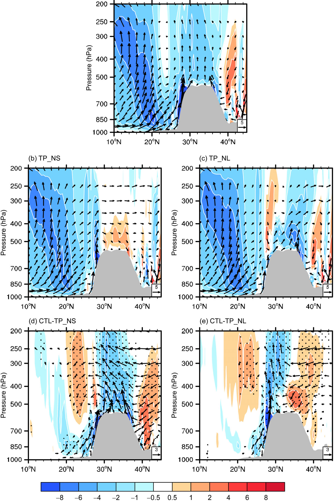
图 6 CTL（a）、TP_NS（b）和 TP_NL（c）试验，以及 CTL 与 TP_NS（d）和 CTL 与 TP_NL（e）之差，85°E 至 95°E 平均的气压–纬度剖面垂直环流（矢量，v 和 −50*ω）与垂直速度（阴影，单位：0.02 Pa s−1）。（d）和（e）中点状区域表示垂直速度差值超过 95% 置信水平的统计显著性。（d）和（e）中仅绘制超过 95% 置信水平的显著垂直环流差值。
Figure 6 Pressure–latitude cross sections of the vertical circulation (vectors, v and −50*ω) and vertical velocity (shading, unit: 0.02 Pa s−1) averaged from 85°E to 95°E for the experiments of CTL (a), TP_NS (b), and TP_NL (c), and the differences between CTL and TP_NS (d) and CTL and TP_NL (e). Dotted regions in (d) and (e) denote statistical significance of vertical velocity differences above the 95% level. Only vertical circulation differences in (d) and (e) with statistical significance above the 95% level are plotted.
在 CTL 试验中（图 6a），赤道与 20°N 之间以及高原南坡上空存在两支明显的上升运动。
In the CTL experiment (Figure 6a), two distinct branches of upward motion are located between the equator and 20°N, and over the southern slope of the TP.
它们分别对应南亚夏季风的南支和北支（Wu et al., 2012）。
These correspond to the southern and northern branches of the South Asia summer monsoon, respectively (Wu et al., 2012).
在 TP_NS 和 TP_NL 试验中（分别见图 6b 和 6c），南支上升运动变化不大；但北支上升运动显著减弱甚至消失。
The upward motion of the southern branch changes little in the TP_NS and TP_NL experiments (Figure 6b and 6c, respectively); however, the upward motion of the northern branch weakens considerably or even disappears.
没有地表感热加热时，高原上空以下沉运动为主（图 6b）。
Without surface SH, subsidence prevails over the TP (Figure 6b).
没有潜热加热时，高原北部以上升运动为主，其最大值位于近地面附近（图 6c）。
Without LH, air ascent prevails over the northern TP with its maximum located near the surface (Figure 6c).
这是因为 TP_NL 试验中存在地表感热加热，地面辐合强（图 4a）。
This is because surface SH exists in the TP_NL experiment and surface convergence is strong (Figure 4a).
图 6d 表明，地表感热加热显著增强整个高原及其以南地区的气流上升。
Figure 6d demonstrates that surface SH significantly enhances air ascent over the entire TP and the region to its south.
相反，高原主体的潜热加热仅增强高原南部及其南坡的气流上升（图 6e），而在 24°N 和高原北部出现气流下沉；后者与该地区降水减少（图 4b）和地表感热增强（图 4c）相对应。
Conversely, LH over the main TP increases air ascent only over the southern TP and its southern slope (Figure 6e), while air descent occurs at 24°N and over the northern TP; the latter corresponds to reduced precipitation (Figure 4b) and increased surface SH (Figure 4c) in the area.
细察差异分布可见，高原主体的地表感热加热或潜热加热均能显著增强气流上升，并在高原以南 2 km 以下激发出偏南气流，导致高原南坡降水增加（图 5b 和 5c）。
Scrutinizing the distribution of differences indicates that either the surface SH or the LH over the main TP can significantly enhance air ascent and induce southerly flow below 2 km to the south of the TP, leading to the increased precipitation over the southern slope of the TP (Figure 5b and 5c).
然而，感热加热（图 6d）比潜热加热（图 6e）的影响更大。
However, SH has greater influence (Figure 6d) than LH (Figure 6e).
这是因为感热试验中南坡（h>2 km 处）的强地表感热加热能够沿坡面上部诱发更强的气流上升，对低层气流产生更强的抽吸作用。
This is because strong surface SH over the southern slope (where h>2 km) in the sensible heat experiment can induce stronger ascent of air along the upper slope, generating stronger pumping on flow of the lower-level air.
在 CTL 和 TP_NL 两个试验中，南坡均存在地表感热加热；但 CTL 试验中南坡降水超过 10 mm d−1（图 1c）。
In both the CTL and the TP_NL experiments, surface SH exists over the southern slope; however, precipitation over the southern slope in the CTL run is >10 mm d−1 (Figure 1c).
因此，两个试验之间南坡感热加热的差异不大，甚至变为负值。
Consequently, the difference in SH over the southern slope between the two experiments is not great and it even becomes negative.
于是，气流上升对低层大气的抽吸作用无法得到沿坡面地表感热加热的增强，甚至变得远弱于高原主体地表感热加热的抽吸作用。
Thus, the pumping effect on the lower atmosphere as a result of air ascent cannot be reinforced by surface SH along the slope, and it even becomes much weaker than the pumping due to the surface SH over the main TP.
实际上，由于高原主体的地表感热加热能够在高原主体产生降水（图 5b），进而生成高原主体的潜热加热，因此高原感热加热的抽吸作用强于潜热加热也就不足为奇了。
Actually, because the surface SH on the main TP can produce precipitation over the main TP (Figure 5b), generating LH over the main TP, it is unsurprising that the pumping effect due to SH over the TP is stronger than that due to LH.
5. 对对流层上层温度和环流的影响
5. Effects on temperature and circulation in the upper troposphere
夏季，对流层上层温度与非绝热加热的分布满足如下 T-Qz 关系（Wu et al., 2015b）：
During summer, the distributions of temperature and diabatic heating in the upper troposphere satisfy the following T-Qz distribution (Wu et al., 2015b):
T(x) ≈ λ ∂Q(x)/∂x，
T(x) ≈ λ ∂Q(x)/∂x,
其中
in which
λ = (L/HQ)2 · H/(Rβθz) · f(f + ζ)
λ = (L/HQ)2 · H/(Rβθz) · f(f + ζ)
其中 L 和 HQ 分别表示温度和加热的纬向与垂直尺度，θz 为位温的垂直梯度，其他参数为大气科学中常用的变量。
where L and HQ denote the zonal and vertical scales of temperature and heating respectively, θz is the vertical gradient of potential temperature, and the other parameters are variables normally used in atmospheric science.
上述 T-Qz 关系意味着，对流层上层 200 至 400 hPa 之间的暖中心/高压中心应位于加热区的西侧和冷却区的东侧。
The above T-Qz relation implies that the warm/high pressure center in the upper troposphere between 200 and 400 hPa should be located to the west of a heating region and to the east of a cooling region.
不同试验中 300 hPa 温度和风场的分布如图 7a–7c 所示。
The distributions of temperature and wind at 300 hPa in the different experiments are presented in Figure 7a–7c.
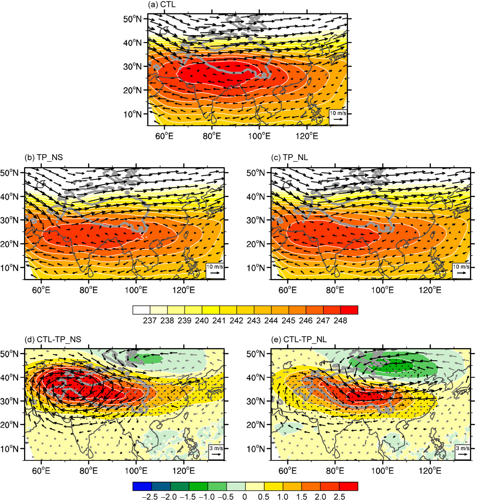
图 7 CTL（a）、TP_NS（b）和 TP_NL（c）试验以及 CTL 减 TP_NS（d）和 CTL 减 TP_NL（e）的 300 hPa 平均夏季气温（阴影，单位：K）和风场（矢量，单位：m s−1）。（d）和（e）中点状区域表示温度距平超过 95% 置信水平的统计显著性。（d）和（e）中超过 95% 置信水平的显著风场差值以黑色绘制。
Figure 7 Mean summer air temperature (shading, unit: K) and wind field (vectors, unit: m s−1) at the 300-hPa level for the experiments of CTL (a), TP_NS (b), and TP_NL (c), CTL minus TP_NS (d), and CTL minus TP_NL (e). Dotted regions in (d) and (e) denote statistical significance of temperature anomalies above the 95% level. Wind differences in (d) and (e) significant above the 95% level are plotted in black.
CTL 试验中的暖心反气旋性环流比 TP_NS 或 TP_NL 试验中的更强，覆盖范围更广。
The warm anticyclonic circulation in the CTL run is stronger and it covers a wider area than that in either the TP_NS or the TP_NL experiments.
CTL 试验中的暖中心位于 27°N、80°E，处于强降水区（图 1c）以西，与观测接近；而在高原主体无感热或潜热的试验中，暖中心位于 25°N 以南，即高原之外。
The warm center in the CTL run is located at 27°N, 80°E, which is to the west of the region of heavy precipitation (Figure 1c) and close to the observations; however, it is located to the south of 25°N, i.e., beyond the TP, in the experiments without either SH or LH over the main TP.
图 7d 和 7e 所示的分布差异表明，高原主体的非绝热加热不仅增强暖心反气旋，还使其中心向西北方向移动，导致能量向下游频散，并在蒙古和我国东北地区形成冷性气旋性环流。
The difference in the distributions shown in Figure 7d and 7e demonstrate that diabatic heating of the main TP not only intensifies the warm anticyclone but it also shifts its center northwestward, resulting in downstream energy dispersion and the formation of a cold cyclonic circulation in the region of Mongolia and Northeast China.
值得强调的是，这些暖中心位于相应降水中心（图 5b 和 5c）以西，与 T-Qz 关系一致，意味着对流层上层暖中心的变化是高原主体非绝热加热引起的潜热加热差异的结果。
It is noteworthy to highlight that these warm centers are located to the west of the corresponding precipitation centers (Figure 5b and 5c), which is in agreement with the T-Qz relation, implying that the variation of the upper tropospheric warm center is a consequence of the difference in LH induced by diabatic heating over the main TP.
图 7d 与 7e 的比较揭示，高原主体的地表感热加热对南亚上空暖心反气旋增强的作用远大于潜热加热。
A comparison of Figure 7d and 7e reveals that surface SH over the main TP has much greater effect than LH on the intensification of the warm anticyclone over South Asia.
这是因为，如上所述，高原主体的地表感热加热能够触发并增强高原上的潜热加热（图 3b），从而增强高原上的总非绝热加热。
This is because, as discussed above, surface SH on the main TP can trigger and enhance LH over the TP (Figure 3b), which intensifies the total diabatic heating over the TP.
然而，高原主体的潜热加热大幅削弱高原南坡的地表感热加热（图 4c），使得高原的总加热变弱。
However, LH over the main TP reduces considerably the surface SH over the southern slope of the TP (Figure 4c) such that the total heating of the TP is weaker.
不同试验中 100 hPa 温度和风场的分布如图 8a–c 所示。
The distributions of temperature and wind at 100 hPa in the different experiments are presented in Figure 8a–c.
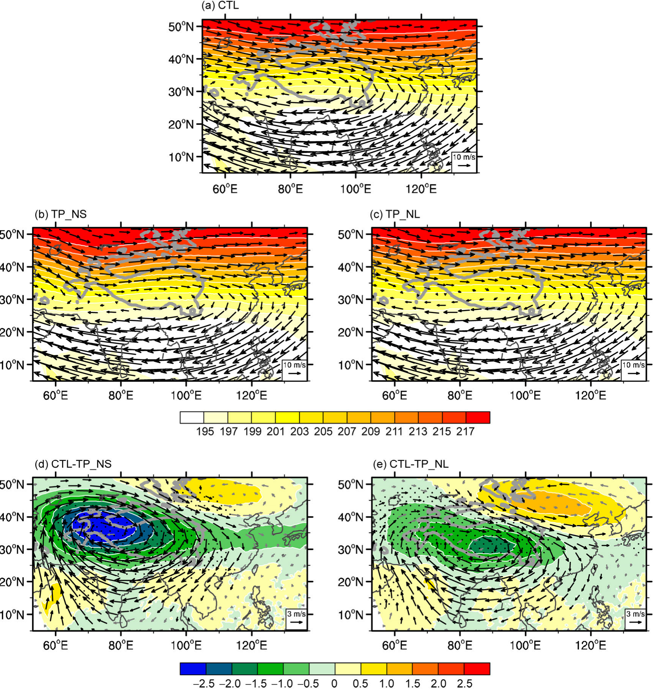
图 8 同图 7，但为 100 hPa 层的气温（阴影，单位：K）和风场（矢量，单位：m s–1）。
Figure 8 As in Figure 7, but for the air temperature (shading, unit: K) and wind field (vectors, unit: m s–1) at the 100-hPa level.
在这一层，南亚反气旋性环流与 300 hPa 相似。
At this level, the South Asian anticyclonic circulation is similar to that at 300 hPa.
然而，温度的分布则完全改变。
However, the distribution of temperature is changed completely.
南亚上空的暖中心消失，温度向极地递增。
The warm center over South Asia disappears and the temperature increases polewards.
这是因为 100 hPa 等压面在热带位于对流层上层，那里空气寒冷；而在中高纬度则位于平流层内。
This is because the 100-hPa surface is located within the upper troposphere in the tropics, which is where the air is cold, whereas it is located within the stratosphere in the mid-high latitudes.
100 hPa 层环流的差异（图 8d 和 8e）与 300 hPa 相似，但强度大大增强。
The difference in the circulation at the 100-hPa level (Figure 8d and 8e) is similar to that at 300 hPa but the intensity is greatly intensified.
最重要的是，这个 100 hPa 反气旋中心具有冷心结构，与 300 hPa 反气旋的暖心特征形成对比。
Most importantly, this 100-hPa anticyclonic center has a cold core, which contrasts with the warm feature of the anticyclone at 300 hPa.
这意味着高原主体的非绝热加热能够对对流层顶附近温度和环流的空间配置产生相当大的影响。
This implies that diabatic heating over the main TP can have considerable influence on the spatial configurations of temperature and circulation near the tropopause.
6. 高原非绝热加热与对流层顶附近的位涡强迫
6. Diabatic heating over the TP and potential vorticity forcing near the tropopause
图 7d、7e、8d 和 8e 给出了有、无高原非绝热加热的试验之间对流层上层和平流层下层温度与环流的差异。
Figures 7d, 7e, 8d, and 8e show the differences in the temperature and circulation in the upper troposphere and lower stratosphere between the experiments with and without TP diabatic heating.
下面，我们通过分析高原热力强迫激发出的、100 与 300 hPa 之间环流差异的相似性和温度差异的对比性，来讨论高原非绝热加热对天气和气候的重要性。
In the following, we consider the significance of diabatic heating of the TP on weather and climate by analyzing both the similarities of the differences in circulation and the contrasts of the differences in temperature between 100 and 300 hPa, as excited by TP thermal forcing.
6.1 对流层顶附近最强反气旋性环流的存在性
6.1 Existence of a maximum anticyclonic circulation near the tropopause
假设在 100 与 300 hPa 之间存在一个层次 pc，即：pc(x, y)，100 hPa < pc < 300 hPa。
Suppose there exist a level pc between 100 and 300 hPa, i.e.: pc(x, y), 100 hPa<pc<300 hPa.
上层反气旋上冷下暖，在 pc 处呈中性：
The upper-layer anticyclone is cold above, warm below, and neutral at pc:
∇pT ≡ 0, p = pc(x, y).（1）
∇pT ≡ 0, p = pc(x, y). (1)
我们首先证明这个中性反气旋是对流层上层最强的反气旋。
We first prove that this neutral anticyclone is the strongest anticyclone in the upper troposphere.
在极坐标系中，热成风关系可写为
In a polar coordinate system, the thermal wind relation can be written as
∂vs/∂ln p = −(R/f)(∂T/∂γ)，（2）
∂vs/∂ln p = −(R/f)(∂T/∂γ), (2)
或写为
or as
∂vs/∂p = −(R/fp)(∂T/∂γ)，（3）
∂vs/∂p = −(R/fp)(∂T/∂γ), (3)
其中 γ 表示径向距离，vs 为切向风，在北半球风呈逆时针旋转时取正值。
where γ denotes the radial distance and vs is the tangential wind, which is positive when the wind is anticlockwise in the Northern Hemisphere.
因为在 pc 层 ∂T/∂γ ≡ 0，由热成风关系（3）得：∂vs/∂p = 0。
Because at the pc level, ∂T/∂γ ≡ 0, following the thermal wind relation (3): ∂vs/∂p = 0.
因此，环流在 pc 层取得最大值。
Thus, the circulation obtains its maximum at the level pc.
将式（3）两边对气压 p 求导可得：
Differentiating both sides of eq. (3) with respect to pressure p leads to:
∂2vs/∂p2 = (R/fp2)(∂T/∂γ) − (R/fp)(∂/∂γ)(∂T/∂p)。（4）
∂2vs/∂p2 = (R/fp2)(∂T/∂γ) − (R/fp)(∂/∂γ)(∂T/∂p). (4)
因为由式（1），∂T/∂γ ≡ 0，在 p = pc 处，我们得到：
Because following eq. (1), ∂T/∂γ ≡ 0, at p=pc, we get:
∂2vs/∂p2 = −(R/fp)(∂/∂γ)(∂T/∂p)，p = pc。（5）
∂2vs/∂p2 = −(R/fp)(∂/∂γ)(∂T/∂p), p=pc. (5)
由图 7d、7e、8d、8e 和图 9 可见，在对流层上层差值反气旋的中心附近（r→0）和边界附近（r→rb），温度从 100 hPa 到 300 hPa 增加，满足如下条件：
From Figures 7d, 7e, 8d, 8e, and 9, near the center (r→0) and near the boundary (r→rb) of the difference anticyclone in the upper troposphere, the temperature increases from 100 to 300 hPa, satisfying the following conditions:
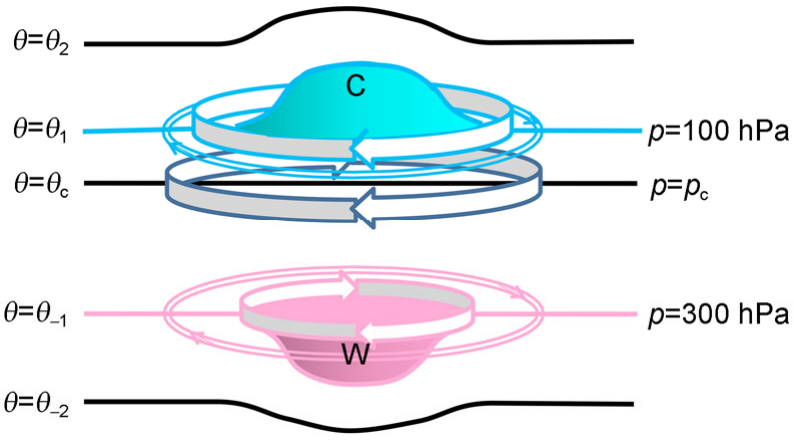
图 9 高原主体热力强迫在对流层顶附近形成位涡强迫极小值区的示意图。矢量表示反气旋性环流；“C”及蓝色表示冷温度，“W”及粉色表示暖温度。
Figure 9 Schematic indicating the formation of the area of minimum PV forcing near the tropopause due to thermal forcing over the main TP. Vector indicates anticyclonic circulation; “C” and blue color denotes cold temperature, and “W” and pink color denotes warm temperature.
∂T/∂p ≫ 0, r → 0; ∂T/∂p > 0, r → rb.
∂T/∂p ≫ 0, r → 0; ∂T/∂p > 0, r → rb.
将上式代入式（5）可得：
Substituting the above into eq. (5) leads to:
∂2vs/∂p2 > 0，p = pc。（6）
∂2vs/∂p2 > 0, p=pc. (6)
因此，由式（3）和（6），我们证明了切向风速在垂直方向上于 pc 层达到最小值，即在 p = pc 层的反气旋性环流是对流层上层（100–300 hPa）最强的反气旋。
Therefore, from eqs. (3) and (6), we have proved that the tangential wind speed reaches its minimum at the pc level in the vertical direction, i.e., the anticyclonic circulation at the level p=pc is the strongest anticyclone in the upper troposphere (100–300 hPa).
对流层上层强反气旋的存在为局地季风经圈环流的发展提供了重要的动力条件。
The existence of a strong anticyclone in the upper troposphere provides important dynamic conditions for the development of the local monsoonal meridional circulation.
这是因为大气经圈环流对轴对称加热的响应具有两种不同类型的环流：热力平衡（TE）型和角动量守恒（AMC）型（Schneider, 1977, 1987; Schneider and Lindzen, 1977; Held and Hou, 1980）。
This is because the response of the atmospheric meridional circulation to axisymmetric heating possesses two distinct types of circulation: the thermal equilibrium (TE) type and the angular momentum conservation (AMC) type (Schneider, 1977, 1987; Schneider and Lindzen, 1977; Held and Hou, 1980).
基于动力学方程组，Plumb and Hou (1992) 推导出了 TE 型与 AMC 型之间的转换判据（其式（7）和（8））。
Based on the dynamic equation set, Plumb and Hou (1992) derived the transformation criteria between the TE and AMC (their eqs. (7) and (8)).
在中高纬度，大气惯性稳定度强，响应为 TE 型解。
In the mid-high latitudes, atmospheric inertial stability is strong and the response obtains a TE-type solution.
在热带和副热带，当绝对涡度变得很小甚至为负时，判据发生偏离，响应为 AMC 型解，季风经圈环流易于发展。
In the tropics and subtropics, when absolute vorticity becomes small or even negative, the criteria deviate and the response obtains an AMC-type solution, and the monsoonal meridional circulation can develop easily.
图 10 给出了不同试验中 150 hPa 绝对涡度的分布及其与 CTL 试验的差异。
Figure 10 shows the distributions of absolute vorticity at 150 hPa in the different experiments and their differences compared with the CTL run.
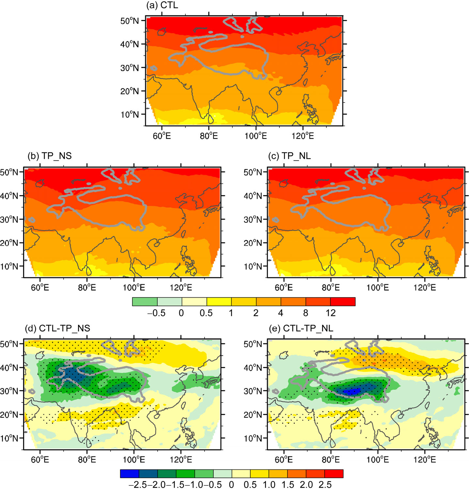
图 10 CTL（a）、TP_NS（b）、TP_NL（c）、CTL 减 TP_NS（d）和 CTL 减 TP_NL（e）试验的 150 hPa 平均夏季绝对涡度分布（阴影，单位：10−5 s−1）。（d）和（e）中点状区域表示差值超过 95% 置信水平的统计显著性。
Figure 10 Mean summer distribution of absolute vorticity (shading, unit: 10−5 s−1) at the 150-hPa level for the experiments of CTL (a), TP_NS (b), TP_NL (c), CTL minus TP_NS (d), and CTL minus TP_NL (e). Dotted regions in (d) and (e) denote statistical significance of the difference above the 95% level.
结果表明，高原主体的地表感热加热或潜热加热均能使高原上空的绝对涡度减小 2×10−5 s−1 以上（图 10d 和 10e），在高原正上空形成绝对涡度极小值区（图 10a）。
The results demonstrate that either surface SH or LH over the main TP can reduce the absolute vorticity above the TP by more than 2×10−5 s−1 (Figure 10d and 10e), forming a region of minimum absolute vorticity just over the TP (Figure 10a).
这与南亚夏季风北支一起，有助于激发高原以南的季风经圈环流（图 6d 和 6e）。
This helps the excitation of the monsoonal meridional circulation to the south of the TP (Figure 6d and 6e) in conjunction with the northern branch of the South Asian summer monsoon.
这些结果表明，由高原热力强迫引起的 p = pc 层最强反气旋环流的存在，为亚洲季风区经圈环流的发展提供了重要的必要条件。
These results indicate that the existence of the strongest anticyclone circulation at the p=pc level, induced by TP thermal forcing, provides important conditions necessary for the development of the meridional circulation in the Asian monsoon area.
6.2 最强反气旋性环流的位置接近对流层顶
6.2 Location of strongest anticyclone circulation is near the tropopause
由图 7 和图 8 可以构建对流层上层反气旋的热力配置，如图 9 所示。
From Figures 7 and 8, the thermal configuration of the anticyclone in the upper troposphere can be constructed and it is presented in Figure 9.
反气旋自 p = pc 层向下是暖性的，其强度按照（2）式向下递减。
The anticyclone is warm from the p=pc level downward and its intensity decreases downward according to (2).
反气旋自 p = pc 层向上是冷性的，依据同样的论证，其强度也应向上递减。
The anticyclone is cold from the p=pc level upward and its intensity should decrease upward as well, following the same argument.
此外，由式（3），我们有：
In addition, from eq. (3), we have:
Δvs = −(RΔp/fp)(∂T/∂γ)。（7）
Δvs = −(RΔp/fp)(∂T/∂γ). (7)
这意味着，p = pc 处反气旋向上或向下的垂直递减率与距 pc 的垂直距离 Δp 以及水平温度梯度 ∂T/∂γ 成正比，但与大气压 p 成反比。
This implies that the upward or downward vertical rate of decrease of the anticyclone at p=pc is proportional to the vertical distance Δp from pc and to the horizontal temperature gradient ∂T/∂γ, but it is inversely proportional to the atmospheric pressure p.
对比图 7d 与图 8d 可见，反气旋中心（35°N，75°E）与其边界（35°N，105°E）之间的温度差在 300 hPa 和 100 hPa 均约为 2°C，这表明反气旋内部水平温度梯度 ∂T/∂γ 在 300 hPa 和 100 hPa 具有相似性。
Comparing Figure 7d with Figure 8d reveals that the temperature difference between the anticyclone center at 35°N, 75°E and its border at 35°N, 105°E is about 2°C at both 300 and 100 hPa, which indicates similarity of the horizontal temperature gradient ∂T/∂γ within the anticyclone at 300 and 100 hPa.
根据（3）式，离开 p = pc 层后，向下强度的递减率 (∂vs/∂p)d 慢于向上的递减率 (∂vs/∂p)u。
According to (3), away from the p=pc level, the downward rate of decrease of intensity (∂vs/∂p)d is slower than the upward rate of decrease (∂vs/∂p)u.
换言之，对流层上层的暖心反气旋是一个相对较深厚的系统，而上空的冷性反气旋则较浅薄。
In other words, the warm anticyclone in the upper troposphere is a relatively deeper system, whereas the cold anticyclone aloft is shallower.
假定切向风速自 p = pc 向下到 300 hPa 递减 (Δvs)d，自 pc 向上到 100 hPa 递减 (Δvs)u，则由式（7），我们得到：
Assuming the tangential wind speed decreases downward from p=pc to 300 hPa by (Δvs)d, and upward from pc to 100 hPa by (Δvs)u, then from eq. (7), we get:
(pc−100)/(300−pc) ∝ [(100+pc)/(300+pc)] · [(Δvs)u/(Δvs)d] · [(∂T/∂r)d/(∂T/∂r)u]。（8）
(pc−100)/(300−pc) ∝ [(100+pc)/(300+pc)] · [(Δvs)u/(Δvs)d] · [(∂T/∂r)d/(∂T/∂r)u]. (8)
因为反气旋在 100 hPa 比在 300 hPa 更强，于是
Because the anticyclone is stronger at 100 hPa than at 300 hPa, then
(Δvs)u/(Δvs)d < 1.
(Δvs)u/(Δvs)d < 1.
由于
As
(∂T/∂r)d/(∂T/∂r)u ≈ 1，
(∂T/∂r)d/(∂T/∂r)u ≈ 1,
于是
then
(pc−100) ≪ (300−pc)。（9）
(pc−100) ≪ (300−pc). (9)
因此，最强反气旋必然位于 p = pc 层，该层非常接近对流层顶附近的 100 hPa，即夏季高原主体的非绝热加热能够在对流层顶附近激发最强反气旋性环流。
Therefore, the strongest anticyclone must be located at the p=pc level, which is very close to 100 hPa near the tropopause, i.e., the diabatic heating of the main TP in summer can induce the strongest anticyclonic circulation near the tropopause.
6.3 对流层顶附近的位涡强迫极小值
6.3 Minimum potential vorticity forcing near the tropopause
重要的是，反气旋的热力特征（即上冷下暖）使局地静力稳定度 ∂θ/∂z 达到极小值，从而使反气旋中心处单位质量位涡成为极小值，即：
Importantly, the thermal characteristics of the anticyclone (i.e., cold aloft and warm below) cause the in situ static stability ∂θ/∂z to become a minimum, such that the potential vorticity per unit mass at the anticyclonic center becomes a minimum, i. e.:
P = α(f + ζ)(∂θ/∂z) = Minimum，p = pc。（10）
P = α(f + ζ)(∂θ/∂z) = Minimum, p=pc. (10)
图 11 给出了 CTL 试验与两个敏感性试验之间位涡差异的经度–高度剖面。
Figure 11 presents the longitude–height cross sections of the potential vorticity difference between the CTL run and the two sensitivity experiments.
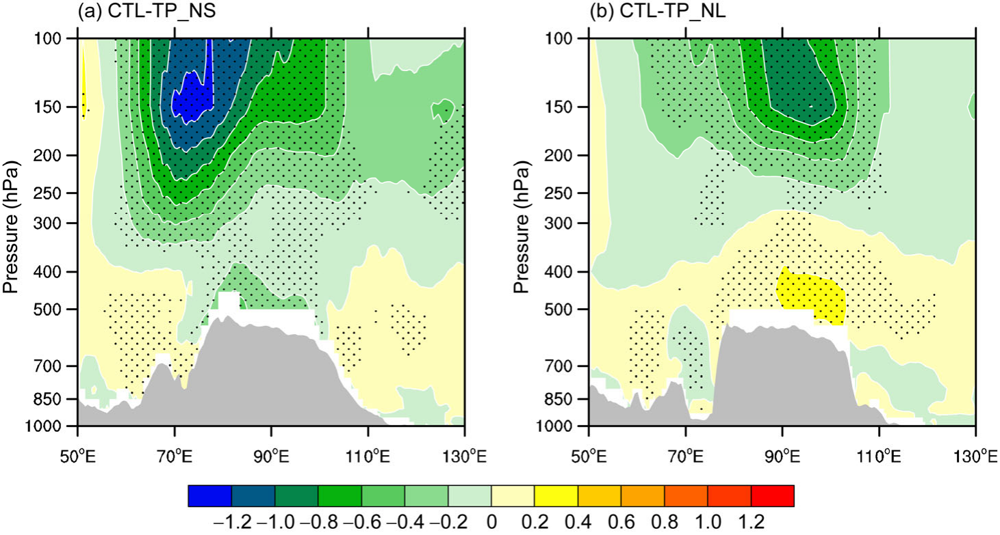
图 11 高原主体加热激发的位涡差异（单位：PVU = 10−6 K m2 s−1 kg−1）。（a）沿 35°N 的 CTL 减 TP_NS，由地表感热加热引起；（b）沿 32.5°N 的 CTL−TP_NL，由潜热加热引起。点状区域表示差值超过 95% 置信水平的统计显著性。
Figure 11 Potential vorticity difference exited by heating of the main body of the TP (unit: PVU=10−6 K m2 s−1 kg−1). (a) CTL minus TP_NS along 35°N due to surface sensible heating; (b) CTL-TP_NL along 32.5°N due to latent heating. Dotted regions denote statistical significance of the difference above the 95% level.
制作剖面所选纬度即差值反气旋中心所在的纬度（参见图 8d、8e、10d 和 10e）。
The latitude chosen for producing the cross section is along the latitude where the difference anticyclone center is located (refer to Figures 8d, 8e, 10d, and 10e).
结果表明，高原主体的地表感热加热或潜热加热均能在接近对流层顶的层次（100–150 hPa）生成位涡强迫极小值中心。
It shows that either surface SH or LH over the main TP can generate a center of minimum potential vorticity forcing at the level close to the tropopause (100–150 hPa).
与潜热加热引起的中心（图 11b）相比，地表感热加热引起的位涡强迫极小值中心（图 11a）位置更偏西偏北，且强度大得多，最大强度超过 −1.2 PVU（1 PVU = 10−6 K m2 s−1 kg−1）。
Compared with that induced by LH (Figure 11b), the center of minimum potential vorticity forcing induced by surface SH (Figure 11a) is located further westward and northward, and it is much stronger, with a maximum intensity of >−1.2 PVU (1 PVU=10−6 K m2 s−1 kg−1).
由于该强迫中心位于西风气流中，它可以触发向下游传播的罗斯贝波列，如图 7d、7e、8d 和 8e 所示。
Because this forcing center is located within the westerly flow, it can trigger a downward-propagating Rossby wave train, as presented in Figures 7d, 7e, 8d, and 8e.
显然，高原主体的非绝热加热能够改变对流层上层温度和环流的配置，并在对流层顶附近、西风气流内部生成位涡强迫极小值源区，从而影响北半球的环流和气候。
It is evident that diabatic heating of the main TP can change the configuration of temperature and circulation in the upper troposphere and generate a source of minimum potential vorticity forcing near the tropopause and within the westerly flow, which influences the circulation and climate in the Northern Hemisphere.
7. 讨论与结论
7. Discussion and conclusions
基于数值模拟，本研究研究了夏季海拔高于 2 km 的高原主体地表感热加热与潜热加热的特征及相互作用。
Based on numerical modeling, this study investigated the characteristics and interactions of surface SH and LH in summer over the main TP with an elevation >2 km.
分析了它们对垂直运动和局地季风经圈环流的影响，并重点讨论了它们对季风区上空高层大气温度和环流的影响。
Their impacts on vertical motion and the local monsoonal meridional circulation were analyzed, and their influences on the temperature and circulation of the upper atmosphere over the monsoonal area were highlighted.
结果表明，高原地表感热加热能够在高原上产生对流性降水并生成潜热加热，而高原潜热加热则能增加（减少）高原南部（北部）的降水，并减弱（增强）当地的地表感热加热。
The results demonstrated that surface SH of the TP can generate convective precipitation over the TP and produce LH, whereas LH over the TP can increase (decrease) precipitation over the southern (northern) TP and reduce (increase) the in situ surface SH.
这表明两类非绝热加热之间存在反馈或相互作用过程。
This indicates the existence of a feedback or interaction process between the two types of diabatic heating.
高原主体的地表感热加热能够在高原及其以南地区产生气流上升，显著增强亚洲季风区低层的偏南气流和高空的偏北气流，从而使局地季风经圈环流得到增强。
Surface SH over the main TP can generate ascent of air over the TP and regions to its south, significantly intensifying the southerly flow in the lower layer and the northerly flow aloft in the area of the Asian monsoon, such that the local monsoonal meridional circulation is enhanced.
然而，高原潜热加热能够在高原南部产生气流上升、在高原北部产生气流下沉，因此其对季风经圈环流的影响较弱。
However, LH over the TP can produce an ascent of air over the southern TP and a descent of air over the northern TP and thus, its influence on the monsoonal meridional circulation is weaker.
高原的感热与潜热均能增强对流层上层的暖中心和南亚上空的反气旋性环流，并使其中心向西北移动；但地表感热的作用更强。
Both SH and LH over the TP can enhance the warm center in the upper troposphere and the anticyclonic circulation over South Asia, and shift its center northwestward; however, the impact of surface SH is stronger.
由高原非绝热加热引起的上层反气旋性环流，在 300 hPa 伴随暖温度，在 100 hPa 伴随冷温度，且其在 100 hPa 的强度强于 300 hPa。
The upper-layer anticyclonic circulation, induced by diabatic heating over the TP, is accompanied by warm temperatures at 300 hPa and by cold temperatures at 100 hPa, while its intensity at 100 hPa is stronger than at 300 hPa.
对流层上层的暖心反气旋是一个较深厚的系统，而上空的冷性反气旋则较浅薄。
The warm anticyclone in the upper troposphere is a deeper system, while the cold anticyclone aloft is a shallower system.
基于热成风关系，证明了高原加热引起的反气旋是对流层顶附近最强的环流，有利于 AMC 型季风经圈环流的发展。
Based on the thermal wind relation, it was shown that the anticyclone induced by TP heating is the strongest circulation near the tropopause, which favors the development of the AMC type of monsoonal meridional circulation.
通过改变对流层上层温度和环流的配置，高原非绝热加热能够在对流层顶附近激发显著的位涡极小值中心。
By changing the configuration of temperature and circulation in the upper troposphere, diabatic heating of the TP can induce a prominent center of minimum potential vorticity near the tropopause.
由于该中心位于中纬度西风带内，它能够激发向下游传播的罗斯贝波列，从而影响北半球的环流和气候。
Because this center is located within the mid-latitude westerlies, it can excite a downstream-propagating Rossby wave train and thus, affect the circulation and climate of the Northern Hemisphere.
需要指出的是，仍有两个关键问题尚未解决：300 hPa 的暖心反气旋是如何形成的，以及该反气旋为何在 100 hPa 变为冷性系统。
It is noted that two essential questions remain unsolved: how the warm anticyclone at 300 hPa is formed, and why this anticyclone changes to a cold system at 100 hPa.
这些问题将在本研究第二部分中讨论。
These issues will be discussed in the second part of this study.
致谢
Acknowledgements
作者感谢审稿人提出的宝贵意见与建议。
The authors would like to thank the reviewers for their valuable comments and suggestions.
本研究受中国国家自然科学基金（批准号 41275088、91437219 和 41328006）以及中国财政部和科学技术部管理的公益性行业（气象）科研专项（批准号 GYHY201406001）资助。
This study was supported by the Nsyionsl Natural Science Foundation of China (Grant Nos. 41275088, 91437219 & 41328006) and the the Special Fund for Public Welfare Industry (Meteorology) administered by the Chinese Ministry of Finance and the Ministry of Science and Technology (Grant No. GYHY201406001).